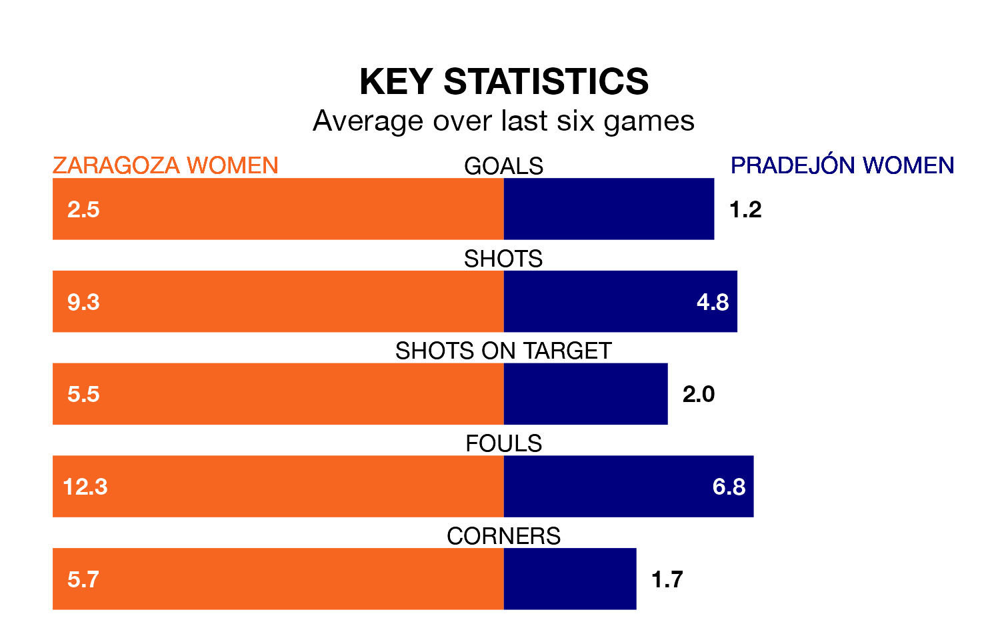

Zaragoza Women host Pradejón Women on early Sunday on the back of five consecutive wins in Segunda Federación Femenina.
Zaragoza have picked up 15 points from their last six games, and they face a Pradejón side who drew their last match, and have collected eight points from the last possible 18.
Pradejón are 14th in the table after 18 games, of which they have won seven and drawn three, earning 24 points.
Zaragoza are three places ahead of the visitors in 11th, with eight wins and five draws putting them on 29 points.
With 27 goals in 18 games so far this season, the home side are scoring more than average in the league with 1.5 goals per game. And they are conceding fewer than average, letting in 19 goals at a rate of 1.1 per game.
Pradejón, meanwhile, are average scorers, with 1.3 goals per game. They have conceded 1.1 goals per game.
Zaragoza's last match was on January 27, a 2-0 win against Osasuna II Women, with getting the goals for Zaragoza.
Pradejón drew 0-0 with Balears Women last time out, on January 28.
Updated: 09:21 (UTC), 30/01/24